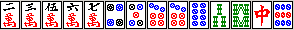

フーロ技術論
食い仕掛けのタイミングと押し引きとの技術論

超ラン勝ち組になるための目標：東12での先制リーチ率28％以上（リャンメン率72％超）、かつ、局あたり収入+1275超
最強水準になるための目標：東12での先制リーチ率31.5％以上（リャンメン率74％超）、かつ、局あたり収入+1350
前置き
「面前メンツ構成技術論」によってリャンメン先制リーチができるようになったら、食い仕掛けの技術についても身につける。
最強水準になるためには、例えば、先制リーチ率を下げることなく（東12で31.5％）、先制2フーロ率を高め（28.5％超）、しかも放銃率を上げない（13.2％以下）というような、高度なレベルが要求される。
バックグラウンドとしてあるのは、あくまでも「面前メンツ構成技術論」によって培った先制リーチ率の高さと、ベタオリ技術論で学んだ放銃率の低さである。
（どうしても先制リーチが多くならない人は、食い仕掛けなどに対して危険牌を絞っていたりするせいで、降りざるを得ない状況を作ってしまっている可能性もある。状況判断技術論を読み、集計ツールでデータを比較しながら、先制リーチが充分に上がる点まで「攻められる」ように変えていくこと）
食い仕掛けはいつ狙うか
食い仕掛けによる和了は、主に次のような場合に狙われる
・食い仕掛けをしても3900以上の和了が見込める場合
・東2以降でトップまたは2位などで、食うことによって点数が激減せず、和了速度が向上する場合（東風戦の場合。東南戦であれば、もう少し長期的に得点を考えても良い）
・先制リーチに持ち込もうとしてもテンパイさえ難しそうだが、食い仕掛けなら比較的早く和了できる場合（トイツが多い手など、またクイタンありでトイツとカンチャンだらけなど）
・リーチに持ち込んでも1300～1600点にしかならなそうだが、食い仕掛けにすれば大化けするかもしれない場合（例えばドラが字牌でトイツが多い場合）
・和了の価値が相対的にかなり高まっている場合（例えばリーチ棒が2本出ているとか、安上がりでも順位が変動するような時）
書いてみると当たり前であるが、要するに面前での和了率をほとんど落とさずに食い仕掛け和了も増やす、ということが要求される。
「面前で行ってもほとんど和了できないが、食い仕掛けならしばしば上がれる」ような点を見出さなければならない。
食い仕掛けへの基本的な認識としては「食って高くなる場合・トップor中順以降で食って早くなる場合・先制リャンメンが不可能か安い場合 のいずれかの場合に用いる和了手段」という感じだ。
だからこそ、（東12で）先制リーチ率を31.5％超に保った状態で、先制2フーロ率28.5％超という攻撃力にすることが可能なのである。もちろん放銃率は13％前後を保つ。
食い仕掛けでも得点が減らず、早い場合
まずは簡単な例から。
このような手の場合、白ホンイツを狙うことは比較的容易だし、早い。
白や北をポンすることは簡単だろうし、あとは1メンツ自分で完成させるだけでよい。
字牌トイツが2つもあるので面前でリーチをかけるのはやや辛い手である。
またリーチ白だと2600～3200だが、白ホンイツなら3900～5200以上と、得点的にも悪くならない。
こんな場合は全力で食い仕掛けをして良いだろう。つまり、5マンあたりから切って良い。
（ドラ2マン）
同様に、字牌トイツが2つある。
面前で字牌トイツのうち片方をアンコにし片方を頭にするということは、ペンチャンを1つメンツにすることと同様に難しい。
しかも、それでさえ頭が固定されるので、数牌部分で残り3メンツを完成させねばならないということになる。
普通は数牌で3メンツ完成する前にヤクハイが出てしまったりするので、字牌トイツが2つある場合は、よほどきれいならトイツ落としをしたり、字牌シャンポン待ちリーチを狙うが、そうでなければ食い仕掛けになることが多いと考えておく方が好ましいだろう。
この手からホンイツやトイトイを見るかどうかということだが、もちろん可能ならマンズのホンイツやトイトイなどを狙うと良い。
面前での和了は考えにくい手なので、北や4ソウ、7マンから1鳴きしても充分である（トイトイを狙うなら4ソウはまずポンしたい牌である）。
しかし、この程度に他の部分の形も良い時は、いきなりホンイツに絞ったりせずに、より早く上がれるならそういう変化を考えておくこと（実際にはこの手は中がアンコ化し、4ソウをポンして中ドラドラでテンパイした）。
なお東3でトップの場合などは、この程度の形なら上がりにくくするより、中のみか、中ドラ1くらいで和了する方が効率的な場合が多いと思う。
（ドラ1マン）
端トイツが4つもある。できればトイトイや発ドラドラを目指しつつ、ポンポンしていこう。
単騎待ちになってしまうかも？ シラネーヨ←
5200とか6400もある手なら、単騎待ちでも全然いいじゃないか(笑)
食い仕掛けで早くなるか、面前で行くべきか迷う場合
（西家。ドラ9ピン、東1、3順目）
これはどうだろうか。
食い仕掛けをすると若干早くなりそうだが、1000点かクソ待ちの2000点になる可能性が高い。
面前で進めた場合でもある程度早く、リーチ西や場合によってはピンフになるのではなかろうか。
このように「食い仕掛けは早いか、面前でも早いか」は基本的に、端トイツの数やリャンメン候補の数によって判断する。
当然端のトイツが多ければ、面前でテンパイするのは難しい。面前テンパイを目指しているのに端のトイツを3つ抱えている、というような状態は大体絶望的である。
しかし同じトイツであっても、この例のように4ソウなどなら、4ソウのアンコ化のほかにも35ソウ引きによるリャンメン化などを見込むことができるわけだ。
特にこの手だと7ソウ、9ソウなどを引くことによって一気に「リーチ西」程度を狙える形になるので、食い仕掛けにしてそんなに早くなる手ではない。
また、リャンメンやメンツがある程度そろっている場合なら、トイツがいくつかあっても余裕を持ってトイツ落とししてリーチにいける場合も多い。
もちろん、2枚目の西が出たらポンしてしまってこの局は安上がりに徹するのもいい。また7ソウを引いた後に西が出たなら、順目が早ければ西のトイツ落としをしてメンピンにすることも考えられる。
ただし、当然トップであれば、後付けを含む西のみを目指すのが賢明だろう（さすがに14ピンからは鳴かないが 笑）。
ところで、この手でドラにこだわることはオススメしない。
1000→3900とか、2600→5200というような得点の上昇が見込めるならともかく、1000→2000のために食い仕掛けでペンチャンを残したり三色やイッツーをつけようとしない方が良い。
そんなことをするくらいなら面前でリーチを目指した方が早いだろう。
仮に 99 、78 、12 56 東東東 、 1（チー）23のような手があったとして、東チャンタが狙えるわけだが、ここで56は落とさず21と落とす方がいい（11ならまた別で、ポンできるためかなり和了しやすいので、いいかもしれないけれど）。
2000→3900というならまだしも、1000点のために和了率を下げるのはどうかと思う。トップならなおさらである。
こういった安上がり食い仕掛けの利点は「早く上がれること」であって、遅くしてわずかに点数を上げるべきではないのだ。
（その度合いがどの程度であるかは、シミュレータMJSIM0を用いて各自把握するとよい）
（ドラ3ピン）
かなりばらばら。
このくらいだと、食い仕掛け（1鳴き）をしてもしなくても和了速度がほとんど変わらない（端トイツがないので）。
例えば白ポンして、その次に3マンをチーすると、もうバラバラでほとんど有効牌がない状態になってしまう。
得点も高くならず、先制されて危険な目に遭うのがオチなので、いきなり白ポンというのはどうかと思う。
ただしトップの場合や親の場合などは、白だけポンしておいてしばらくは食うのを我慢して、有効牌を集めるのも手である。
（というのも仮にテンパイが早くても、次の白が出るタイミングが他家の攻撃よりたまたま遅いと、トップだと降りなければならなくなってしまうからだ。それに対して白をポンしておけば、たまたまテンパイが早ければ運良く早上がりすることもできる。トップでなく平場なら「大して早くはならず高くもならないあわよくば1000点」を狙う意味はあまりないが、トップであれば局を進めること自体に非常に大きな価値があるからだ）
（ドラ5マン、北家）
マンズ以外の部分の形があまり整っていない。
中ドラドラ、中ホンイツドラ1を志向しながら、場合によっては中ドラ1への変化も考えて打つ。
この牌姿に、例えば南や白がもう一枚あったらどうだろうか？ 普通に、速攻ホンイツを目指すと思う。
つまり「南や白さえつもれば」かなり良い食い仕掛けの手になるのだ。
また、もし途中でドラドラになったら、ムリなホンイツへの移行はやめて中ドラドラまたは中ドラ3（ポン）を目指した方が効率的だろう。
逆に、この牌姿に、例えば3ソウもあったらどうだろうか？ リーチドラ1、中ドラ1あたりしか目指しにくい形である（もちろん中ドラドラなどになれば別だが）。
この程度に「マンズ以外が汚い」場合は、「第一打はとりあえず南・・・」などとするより、12ソウ8ソウくらいは切ってしまうことを考えて良い。
もちろん繰り返すが、トップの場合はこの限りではなく、上がりやすい中ドラ1や中のみも充分考えて打つべきだ。
面前ではほとんど和了が絶望的な場合
（南家、ドラ2ソウ）
遅そうな手である。とくに「ソーズ以外の形」が、面前でどうにかなりそうな感じではない。
トイツも4つあるし、389ピンを切っていって、かなり厳しいがホンイツやトイトイ（場合によってはチートイ）を狙う。
この手は結局3ポンして22ソウ67マンの形のケイテン状態で他家につもられた。
どうせ面前で進めてもまず和了できなさそうなので、「あわよくば」という感じで5順目の8ピンポンから仕掛けた。
こういった手でも時々マンガンクラスを上がれるものだ。
いきなり7ピンなどを引いた場合は3ピン→北とを落としていってメンゼンにすることも考えられるのだが、この形だとどちらにせよ厳しい。
（ドラ2ソウ）
今の例と似たような手だ。
89ソウがトイツであり、普通にメンゼンで上がろうとすればよほどツモが良くない限り、トイツ落としなどが必要になるだろう。
その割に、他の部分の形もよくない。
89ソウ部分はポン、56部分で1メンツ、あと1メンツを作る、という風に指針が立てられるので、むりやりにでもチンイツやホンイツに持っていって良い手だ。
ただし、この程度の形から上がり切れることはあまりない（この手は最終的にチンイツでテンパイしたが）。
第一打からのヤクハイ志向について
これまでは主に、ヤクハイがトイツになっている場合を考えてきたが、次に、ヤクハイが1つだけある場合にトイツ化を狙うかどうかを考える。
以下のようなときに、孤立ヤクハイを重視して19などの浮き牌切りや、245からの2切りをする。
・トップの時
・親の時
・メンツ候補があまりそろっていない時
・ドラドラなどの手で、ヤクハイトイツが来ると極端に有利になりそうな時
ただし、トップでない場合で、
・手がきれい（リャンメンやメンツが多く、先制リーチがかけられそうな）時
・平場でそこそこのハイパイで、ヤクハイがきてもヤクハイのみやヤクハイドラ1程度にしかならない時
・他家が染めや食い仕掛けをしていて、自分の手がメンゼンでなんとかなりそうな時
のような場合は、ヤクハイはなるべく早く切ってしまう。
せっかくの手なのに、ヤクハイがトイツになると捨てにくく結局地味な上がりになってしまうことが多い。
（ドラ2ソウ、南家）
こんな形だとどうだろうか。
まず西を切ることは問題ないとして、この手は何を目指すだろうか？
東2以降でトップであれば、この手でもヤクハイをかぶせることを考えて良い。
つまり西の後には1マンを切り、ヤクハイがトイツ化したら1鳴きしてヤクハイドラ1程度でさくっと和了するのだ。またある程度メンツ候補がそろっているので、1マンの次には2ピンや8ソウを1つくらい落としてヤクハイトイツ化を目指しても良い。
しかしこれが東1平場などであるなら、この程度にメンツ候補が整っているなら、まず何よりリーチで上がることを考える。
この場合はヤクハイポンして25ソウノベタン待ちのヤクハイドラドラにもできる可能性があるので、「何が何でもリーチ」ではなくてもいいが、この程度の形から毎回ヤクハイドラ1など地味な手を狙っていては得点力はつかない。ヤクハイがトイツ化しても、基本的に2鳴きにすべきだ。

（ドラ3ピン、東1平場）
これはどうか。
もしこれが東3トップなどなら、やはりヤクハイのトイツ化によって和了率が非常に高まるだろうから、7ピンあたりから落としてもいい。
しかしトップでないのであれば、せっかくこのくらい良い形なのに1000点や2000点にしてしまうのは非常にもったいない。即座に中を切ってメンピン～ドラor裏orツモ裏等を狙うべきである。
後付けをどの程度利用するか
基本的な考えは
・ペンチャンやカンチャンが多いなど、後付けをしないと遅くて上がれない時
・トップなどで、「なるべく早く（他家に仕掛けられる前に）上がるか、そうでなければベタオリ」という戦略を取る可能性が高い時
・場風や三元牌ではなく、自風がトイツの時
のような場合に後付けを利用する。
ヤクハイが2種類トイツであるような場合なら後付けをしても全然問題はないだろうが、1種類しか役牌トイツがない場合に、ヤクハイシャンポン待ちで上がり切ることは、ヤクハイを先にポンしておいて上がることよりも難しい。
その難しさを考慮に入れても、後付けをすることで和了率が上がるだろうと判断される場合にだけ、後付けをするわけだ。
ただ、最後にヤクハイシャンポンなどになりさえしなければ大抵「和了が早くなる」と考えていい。
（いきなりドラポンでもしない限り）ヤクハイが完全に絞りきられるということは滅多になく、「モチモチ」ということもほとんどない。
デメリットは、もしも絞られたりモチモチになった場合に、他に上がる術がないことである。
（東3、南家。自分はトップで35400点、2位は27600点）
このような手で6順目に出た8ピンをポンして、南と6マンのシャンポン待ち（片上がり）でテンパイに取った（クイタンありならポンして打南という選択もある）。
なお69ピンは4枚切れだった。
早上がりをする場合の留意点について
よく食い仕掛けをする人で、とにかく食えるものは全部チー、というような人を見るが、食い仕掛けの場合も面前と同様「リャンメンテンパイ」を志向することが重要である。
もちろん食い仕掛けの場合はシャンポンも必然的に多くなるわけだが、基本的には「良い待ち」を心がけないと、2フーロ後放銃率などが極端に増加してしまう。
比較的きれいな（リャンメン系の多い）手で、愚形部分があるのに、焦ってリャンメン部分から先にチーなどをするのはあまり好ましくない。
例えば
11 79マン、 1367ピン、222（ドラ）ソウ、東東
という形だとして、8マンや2ピンをチーして後付けを狙うのはわかるが、58ピンからチーは考えられない。
またこれは重要だと思うが、
11234マン、579ピン、34ソー、東東東（ポン）
というイーシャンテンで、25ソーの方を先にチーすることは大抵有利ではない。
せっかくチーによって2倍のツモがあるのだから、愚形を先に処理できるようにしよう。
もちろん、順目が遅いとか他家リーチが来ている状態だったらしょうがないが。
追っかけが来た場合の挙動
問題は、食い仕掛けをやると他家リーチなどが来た時に非常に怖い思いをすることである(笑)。
3900以上の手でテンパイしていればほとんど無視していいが、つい、1000点テンパイを取ってしまいアンパイがない、などという場合はどうすればいいだろうか。
普通のメンゼンの場合と同様に、まず、相手に先制されてしまったら、仮に1シャンテンであっても、あまり攻められない（デメリットが大きい）という風に考えておこう。
また、2000点程度の手なのに、親リーチに無スジの5とかをホイホイ切るのも辛いものがある。
とつげき東北の場合は、リーチ棒含めて2000点分のテンパイなどなら、リーチが来たら（現物待ちとか、オーラス勝負どころでもない限り）ベタベタ降りる。特に流局に近ければ近いほど、降りる。
親の場合は1500点でもけっこう攻めるが、これも流局が近づくと降りる場合が多い。
ただ、降りると言って降りられるほど牌が残っていない場合はどうか。
11m56m 123チー678チー東東東ポン （1000点テンパイ、東1子）
という形にリーチが来たとする。1mはアンパイだがどうする？
親ならもう無視してつっこむが、子であれば1mを切って降りると思う。仮に、その後アンパイがすぐなくなってしまうかもしれないとしてもだ。
しかしこの形で、5mしかアンパイがなく、危険牌の7ソウを引いた、というくらいなら、攻めているような気がする。
逆に、オーラスなどで自分30000 2位28000 3位26000 4位24000で4位のリーチであれば、何がなんでも攻める。
とつげき東北のデータでは、
子 2フーロ率13.5％、先制2フーロ割合27.5％、2フーロ時和了率34％、2フーロ時放銃率14.5％、2フーロ和了素点3867
親 2フーロ率19.5％、先制2フーロ割合35％、2フーロ時和了率35％、2フーロ時放銃率11.5％、2フーロ和了素点6354
となっている。
食い仕掛けに対する攻撃に対しては「どのような状態で、どう」という明確化ができていない現状なので、追っかけに対する挙動としてはこの値を参考値としてほしい。